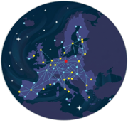

Back to Projects
Overview
This applied research project measures the effect of the ESA Business Incubation Centre (ESA-BIC) programme on firm performance and regional development. Through a mixed-methods approach combining econometric analysis with qualitative fieldwork, the project evaluates how the ESA-BIC network contributes to business expansion, technological innovation, skilled employment generation, and regional advancement.
Objectives
- Build an open European dataset integrating economic, financial, technological, and territorial information on incubated and comparison firms
- Analyse the correlation between ESA-BIC incubation and improved outcomes in business growth, technology innovation, access to financing, and employment
- Design surveys examining start-up motivations for choosing ESA-BIC, programme evaluations, and territorial attachment factors
- Assess the programme's contributions to regional innovation ecosystems, technological specialisation, and evidence-based policy
Methodology
- Analytical Foundation — Identifying incubated enterprises, establishing comparison groups, integrating variables, and designing validation protocols.
- Impact Estimation — Applying quantitative modelling to measure programme effects on growth, innovation, employment, and financing.
- Qualitative Validation — Deploying structured questionnaires with start-ups and managers to interpret mechanisms and territorial factors.
- Results & Knowledge Transfer — Producing scientific outputs, publishing open data, issuing final reports, and formulating recommendations.
Research Team
Enrique Acebo (PI)
Permanent Labour Professor, Universidad de León
Diego Domínguez Fernández
Associate Professor, Universidad de León
José Ángel Miguel Dávila
Full Professor, Universidad de León
Jesús Gonzalo de Grado
Full Professor, Universidad de León
David Hernando Tomé
Predoctoral Researcher, Universidad de León
Lizbeth Gutiérrez Rodríguez
Predoctoral Researcher, Universidad de Salamanca
Supporting Organisations
- Ministerio de Ciencia, Innovación y Universidades
- FECYT — Spanish Foundation for Science and Technology
- Instituto para la Competitividad Empresarial de Castilla y León